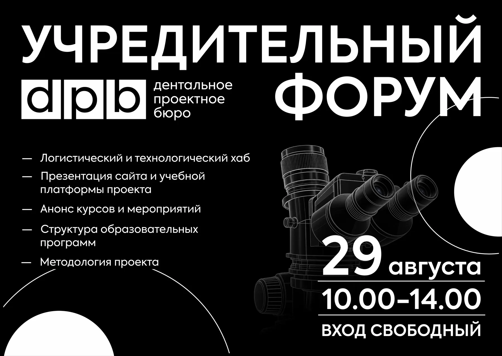
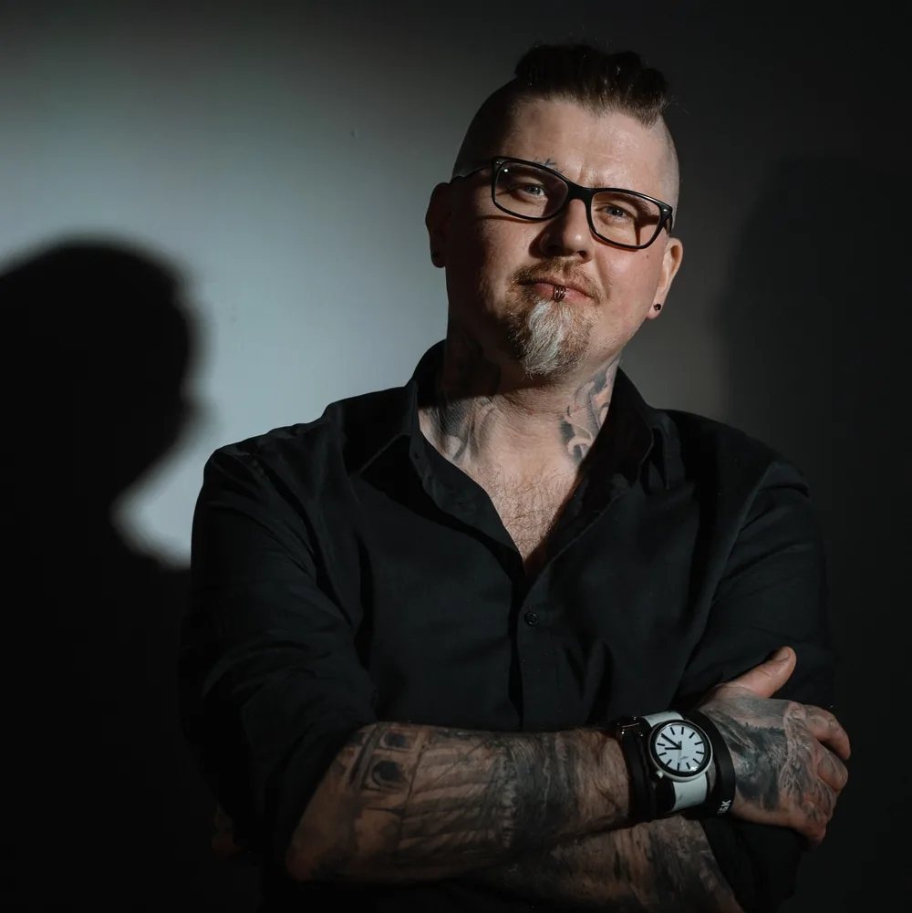

Практические курсы, лекции и регулярные онлайн-семинары для врачей, зубных техников и студентов профильных направлений.
Ближайшие события
4актуальных события
август292026
Открытая встречаВход свободный
Для врачей, техников и студентов профильных направлений
Учредительный форум dpb
Открытая встреча, на которой представим образовательную систему dpb, сайт и учебную платформу, структуру программ, методологию проекта, ближайшие курсы и мероприятия, а также логистический и технологический хаб.
10:00–14:00Барнаул · Сиреневая, 31Без регистрацииКоличество участников не ограничено

август29–302026
Практический курсИдёт запись
Для зубных техников, керамистов и студентов профильных направлений
T.O.N. Новая оптическая теория
Универсальная система работы с керамикой для всех видов каркасных реставраций: взаимосвязь цвета, внешней и внутренней морфологии. На практике каждый участник самостоятельно изготовит три единицы и отработает основные этапы работы по методике T.O.N.
Теория + практикаБарнаул · Сиреневая, 31До 20 участников40 000 ₽

Автор методикиСергей ЮдаковСанкт-Петербург · зубной техник · основатель dpb
Для врачей-стоматологов и студентов профильных направлений
Виниры, коронки и микропротезирование
Практический курс выстроен в последовательности реальной клинической работы: диагностика, выбор типа и материала реставрации, препарирование, снятие оттиска и фиксация готовой работы.
Теория + практикаБарнаул · Сиреневая, 31До 20 участников40 000 ₽
Для врачей, зубных техников и студентов профильных направлений
Взаимодействие доктора и техника
Лекция о ключевых этапах взаимодействия врача и зубного техника: передача пожеланий пациента, выбор материалов, цифровой и аналоговый протоколы, разбор частых ошибок планирования и профессиональной коммуникации.
В этой категории пока нет опубликованных событий. Оставьте контакты — мы сообщим о новом анонсе.
Еженедельные онлайн-семинары dpb
Регулярные онлайн-встречи, посвящённые одной профессиональной теме, технологии или клиническому вопросу. Каждую неделю в расписании dpb появляется как минимум одна новая встреча, в отдельные недели проходят сразу два семинара.
Кроме прямых эфиров, в онлайн-разделе dpb будут публиковаться расширенные лекции, записи и учебные материалы для самостоятельного просмотра.
01
Новые темы каждую неделю
Анонсы, даты и ссылки на подключение появляются здесь вместе с новым расписанием.